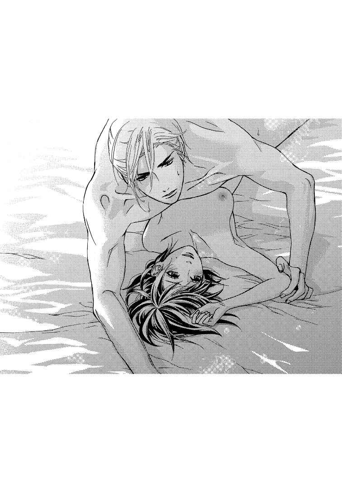
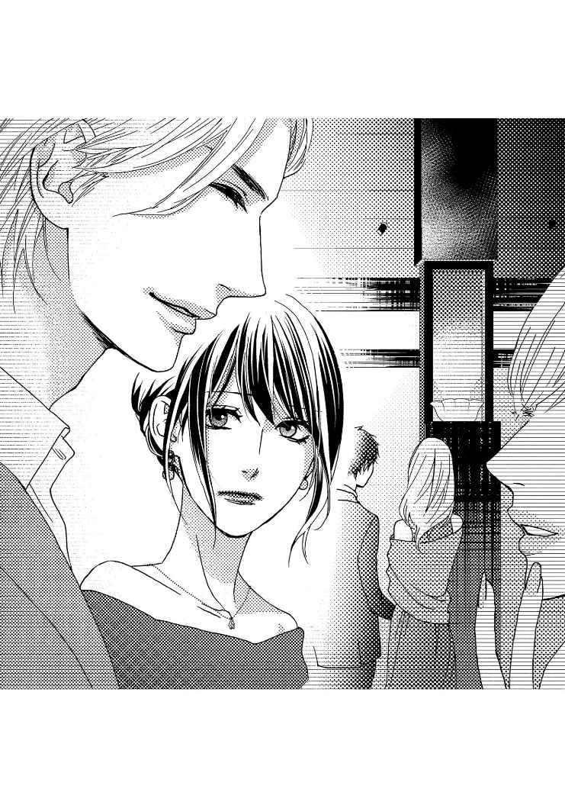
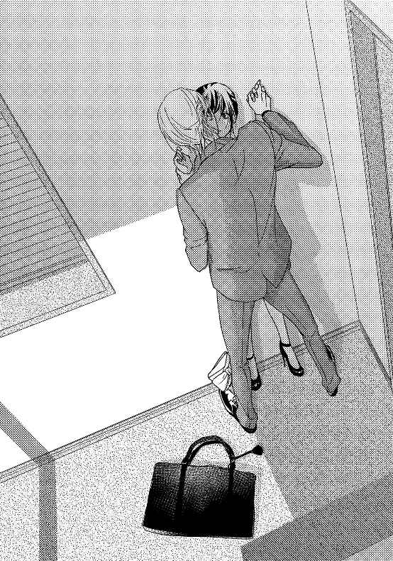
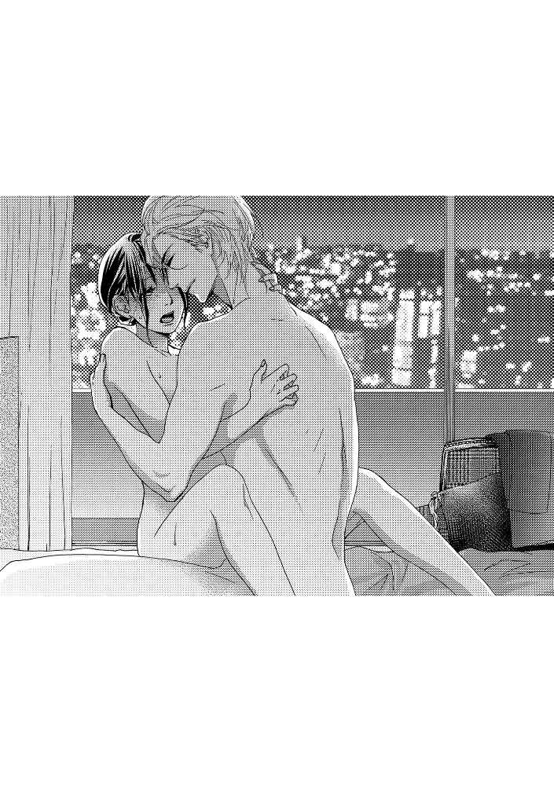

| 2度目の初夜は甘くとろけて【イラスト入り】 (無敵恋愛S*girl) | |
| 御子柴くれは | |
| 株式会社 ぶんか社 (2017) | |
株式会社 ぶんか社
２度目の初夜は甘くとろけて
御子柴くれは・著
真山しん・イラスト
※本作品の内容はすべてフィクションです。
実在の人物・団体・事件などには一切関係ありません。
全てが初めての綾 子 だったが、キスだけは違った。自らの口を食 むようになぞる城 田 の肉厚な唇を受け入れながら、まるでデジャヴのように幼い日の記憶が頭をよぎる。
『永遠に愛すると誓うよ』
そう言って彼は、羽のように軽い口づけを綾子にしてきた。子供ながらに心を奪われ、この人といつか結婚するものだと思った。
しかし綾子は、肝心の相手が誰だったか覚えていない。
『必ず迎えにくるから』
なぜなら彼はそう言って、綾子の前から去ってしまったからだ。
綾子もまた親の都合で引っ越しを繰り返してきたので、それがいつどの時点での出来事なのかあいまいだった。
けれど綾子はその〝王子様〟を待ち続けて恋人も作らず、今日とうとう処女のまま二十六歳の誕生日を迎えてしまっていた。
「幸 村 、考えごと？」
わずかに身体を離した城田が苦笑する。
綾子は慌てて頭を振って雑念を追い払った。
「ち、違います！ ちょっと、思い出しただけです......」
「例の、〝王子様〟？」
綾子は仰向けになったまま、びくりと身をすくめた。またからかわれるのではないかと思ったからだ。
なぜこうして城田の自宅マンションで、ベッドの上で裸になっているかといえば、王子様を待っていて未だに処女だったことを彼にからかわれ、売り言葉に買い言葉で城田に「抱いてほしい」と綾子が求めたからにほかならない。
城田正 吾 は五歳年上で、彫りの深く整った顔立ちに加え、百八十センチを超える長身とがっしりとした男らしい体格から、女性の人気が非常に高い。特定の彼女がいないことも手伝って、いつも女子社員に囲まれている。そんな派手な彼とは接点のなかった綾子だったが、綾子の部署異動をきっかけに直属の先輩となり、関わりを持つようになる。
対する綾子は平均的な顔と体形に黒髪のショートボブ、人並みにオシャレに気は使うけれど、基本的に地味で眼鏡、突出したところはない。そんなごく平凡な彼女を間違っても城田のような男性が相手にするはずはない──と思っていたのに、城田は綾子の意に反して何かと絡んでくるようになった。
『王子様？』
小馬鹿にしたような城田の物言いが、今でも忘れられない。
それは同僚と恋愛話をしていたときで、通りすがりの城田にうっかり聞かれてしまったのだ。巻き込まれるのが面倒だと思ったのか、同僚はそそくさといなくなってしまい、あとには綾子と城田が残された。
『悪いですか？』
挑戦的に城田を見上げれば、彼は形容しがたい表情を浮かべていた。
『城田さん？』
『え、あ──うん。それじゃあ幸村は、いい年して処女ってわけか』
くくっと喉で笑われ、綾子はかあっと顔を赤らめた。
『そ、それが何か......』
『その王子様が優しいといいな』
『え──』
『いまどき、何も知らない女を相手にする奇特な男はなかなかいないもんだぜ？』
『そ、そういうものなんですか──？』
『仕事が忙しいってのに、プライベートでも面倒なことをしたがるやつがいるか？』
綾子はうつむいた。そういえば自分は待っているだけで、いつか会えるだろう王子様のために何かしようとは思ったことがなかったからだ。女性経験の多そうな城田の言葉には、それだけの説得力があった。
『まあ、俺は違うけどな』
その一言が光明に感じられ、綾子はつい頭に浮かんだバカげた考えを口にしていた。
『じゃあ、城田さんが私を女にしてください』
こうして何気ない会話からここまで発展してしまい──。
からかわれるかと思いきや、城田はなぜか真面目な顔で綾子を見つめている。その表情はまるで、綾子が何かを思い出すのを待っているみたいだ。
しかし綾子にはそんな城田に応える余裕はなく、深呼吸したのち、気丈にうなずいたのだった。
「大丈夫です、続けてください」
「......了解」
城田は小さくそう呟くと、すぐに再び折り重なってきて綾子の首筋に顔をうずめた。吐息を吹きかけられたあと、何度も柔肌を吸われる。やがてその手が胸にかかり、綾子がぴくりと身体を揺らした。
「意外と成長してたんだな」
「え？」
「なんでもねえよ」
初めての体験の数々に翻弄されてばかりの綾子に意地悪するように、城田がぎゅっと乳房をわしづかむ。
「ひ、ぁっ」
思わず高い声が上がってしまい、綾子の頬にさっと朱が走った。すると城田がにやりと笑う。
「いい声で啼 くじゃん」
「そ、そんなこと......あんっ」
城田は己の身体をずらして硬くとがった乳頭を口に含み、舌先で転がし始めた。
「あ、ん......は、あっ」
綾子の呼吸が上がっていくのに合わせて、城田は片手で胸を揉みながら、もう片方の手を下へと滑らせていく。
「や、待ってくだ──ひ、ぅっ」
城田の愛撫に頭の芯までぼうっとしてきていた綾子だったが、城田がどこに手を伸ばそうとしているのかを察して、慌てて太ももを閉じようとした。しかし城田が足の間に身体を割り込ませてきたので、物理的に不可能となる。
「いまさら恥ずかしがるなよ」
「でも、まだ心の準備が......」
「わかってる。優しくしてやるよ」
城田は言葉通り、ひどく繊細な手つきで綾子の秘部に触れた。慎ましやかな陰核を指先で優しく押し回され、綾子の秘孔からは蜜がじんわりとにじみ出す。
「んあ、や......あ、はっ......！」
「だいぶいいな」
城田は蜜口に指の腹をあてがうと、そのままつぷりと挿入していく。
「ああっ」
「痛いか？」
「い、いいえ......っ、でも、変な感覚、です......！」
真っ赤な顔でふるふると首を横に振る綾子。
城田がくくっと喉を鳴らし、ゆっくりと指の抽送を開始する。
「ひぁ、あ......あ、んあっ......ああん」
綾子の嬌声が高くなるに従い、城田は指の本数を増やしていく。三本目が出し入れされ始めた頃には、綾子の蜜壺はすっかり潤い、男を受け入れる準備を整えていた。
「挿れるぞ？」
最後通告のように言われたが、綾子は考える間もなくうなずいていた。なぜなら城田に与えられた全てが気持ちよく、その先を知りたくてたまらなくなっていたからだ。
綾子の意思確認が済むと、城田は既に張り詰めていた雄の先端を蜜口にあてがった。その重厚感に思わず息を呑む綾子だったが、城田の背に腕を回してそのときを待った。
「くっ......やっぱりきついな」
みちみちと膣壁を割り開きながら、城田の剛直が綾子を貫いていく。
「あ、あああっ」
城田が少しずつ入ってくるごとに、綾子の背筋にぞくぞくとした感覚が駆け抜ける。破瓜の痛みは確かにあったが、それに勝る充足感に綾子は包まれていた。
やがて城田が綾子を抱き締め、頬にキスしてきた。
「これでひとつになったな。大丈夫か？」
「は、はい......大丈夫です、大丈夫ですけど──」

いつの間にか綾子の瞳に涙が溜まり、流れ落ちた滴 が頬を濡らしていた。先ほど城田は、それを舐め取ってくれたらしい。
不安げに見下ろしてくる城田に、綾子は自分の今の想いをどう伝えていいか困っていた。
「やっぱり王子様がよかったか？」
苦笑する城田に、綾子は小さく首を横に振った。
「そうじゃなくて......なんでこんなに安心してしまうのか、不思議なんです」
「安心？」
「はい。誰かとひとつになることって、こんなにも安心するものなんですね」
涙目で城田を見上げると、城田はなぜか泣きそうな顔をしていた。けれどそれを隠すように綾子の唇に口づけ、腰を動かし始めた。
「んぁあっ、はんっ、あ、ああ！」
「幸村っ......綾子、綾子っ！」
「城田さん、城田さんっ」
いつの間にか城田に名前で呼ばれていたが、綾子の方は彼を受け入れることで精一杯だった。
「お前の身体、やばいな──っ」
城田は息を詰め、綾子をいとおしそうに抱き締めながら彼女の最奥を穿 った。
「ふぁあっ、ああ、もっ......変に、なる！」
「いくぜ......！」
瞬間、城田の欲望がコンドームの中で爆ぜた。
体内で熱い飛沫を感じ、綾子がびくびくと身体を跳ねさせる。
しばらくは荒い息をつきながら、ぐったりとベッドの上にいたふたりだったが、やがて城田の方が口を開いた。
「お前がもし三十になっても独り身だったら、俺がもらってやるよ」
「......私、三十歳になっても独りのように見えるんですか？」
むっと唇をとがらせた綾子に、城田が甘く口づけてくる。
「そ、そういうのは、反則です......っ」
綾子は赤くなった顔を隠すように城田の反対を向いた。
「マジだよ。お前の身体が気に入った」
後ろから不意に抱き締められ、綾子の心臓が高鳴る。あくまで脱処女のための関係だったにすぎないのに、どうしてドキドキしてしまうのか、自分のことながらわからない。
「じゃ、じゃあ──そのときは、お願いします......」
そう呟いたとき城田がどんな顔をしていたのか、綾子は知らない。背中に当たる城田の胸の鼓動が速まったと感じたのは気のせいだったのだろうか──今でも謎だ。
こうして城田に純潔を捧げる形となった綾子だったが、それから城田と発展するようなことはなかった。なぜなら城田はそのあとすぐに、別の会社に引き抜かれてしまったからだ。自然に連絡を取らなくなり、当たり前のように音信不通になってしまう。
けれど綾子は城田のことが忘れられなかった。初めて夜を共にしてから、城田のことが気になって仕方がなかったのである。それが恋だと自覚した頃にはもう、七年の月日が流れていた。
＊ ＊ ＊
「はあ......」
「それ何回目の溜息だか知ってる？」
会社の昼休み、オフィスの自分の席で昼食を摂っていた綾子の隣に、コンビニ袋を提げた美 穂 が座る。
急な問いに綾子は目を瞬かせ、せっせと袋から弁当を取り出す親友を見た。
「えっ......まだ二回ぐらい、とか？」
そんなこと考えたこともないのだから、わかるわけがない。すると美穂は半眼になり、不躾にも箸 で綾子を指してきた。
「ハズレ。この三年で、千回ぐらいかな」
「まさか、そんな──」
いつもの冗談かと己の手作り弁当に戻ろうとしたら、そのまま腕をつかまれて美穂の方に椅子ごと振り向かされてしまう。大きな目に長い睫毛、栗色の巻き毛が特徴の彼女は二歳年上で恋愛経験も豊富、いつも綾子を気にかけてくれている。
「誇張じゃないって！ いったいいつまで〝王子様〟を待ってる気なわけ？」
呆れたように言う美穂に、綾子は言葉が続かない。
城田の言葉を信じているうちにあっという間に三十歳になり、その間、結局は誰とも交際することなく独り身でいた綾子。けれどかつての王子様と同じように、城田が迎えにくることはなく、一年、また一年とときが流れ、ついに三十三歳の完全な行き遅れとなっていた。
「あたしは中途採用だから、例の王子様な城田正吾のことはウワサでしか聞いたことがないけど、アンタがそこまでして待つ相手なんだから、よっぽどいい男なんだろうねえ」
おざなりな言い方をする美穂に、綾子は素直にうなずいていた。いい男かどうかはさておいて、城田のことは今でも綾子の中で大きな存在なのだ。
けれど美穂は箸を割ると、きっぱりと次のように言った。
「でもいいかげん、城田正吾のことは諦めるべきだと思うわ」
「どうして？」
「言う必要がある？」
思わずむっとする綾子に、美穂は当たり前のように続けた。
「年齢を考えなさいよ。あと少しでアラフォーって言われる年じゃない！」
「......それは、そう、だけど──」
綾子の歯切れが悪くなる。それは紛れもない現実で、王子様を待っているなんて夢見る少女が通用する年齢はとうに超えてしまっていたのだから。
落ち込む綾子に、美穂は一転、にこりと笑った。
「そんなわけで今日、さっそく行くのよ！」
「ど、どこに......？」
親友の気迫に押される綾子。
美穂はずばりと言い切った。
「お見合いパーティー!! 」
目を丸くする綾子だったが、すぐにうつむいて緩く首を横に振る。
「興味ないよ、そんなの」
「あるなしじゃあないの！」
美穂は箸を放り出して綾子の手を取った。
「このままじゃ恋愛どころか結婚もできなくなるわ！ 手っ取り早く相手を見つけるには、お見合いパーティーがいちばん！」
「なんで？ 知らない人ばっかりで怖くない？」
「それは心配ないわ！ 皆、結婚したいから参加するわけだから、志を同じくしてるわけよ！」
「志って......」
開いた口がふさがらない綾子に、美穂は任せろとばかりにどんと胸を張った。
「それに一緒に行ってあげるから、怖いことなんかひとつもないって誓うわ！」
「美穂が一緒なら心強いけど──美穂の彼氏が心配するんじゃない？」
「全然」
美穂の即答。さらになんてことのないようにさらりと告げてくる。
「別れたからね。だからあたしも今日は、結婚相手を探す気満々よ！」
「そ、そう」
「ということで、お見合いパーティーは今夜だから！」
アグレッシブな美穂にはもう脱帽の域だが、まさかここまでとは思わなかった。
「こ、今夜!? 無理よ、服もないし髪だって......」
「そこはこの美穂サマに任せなさいって！ 服は知り合いの店でドレスをレンタルできるし、髪は美容院でセットしてもらえばいいし、化粧はあたしがしてあげるから！ あ、コンタクトも忘れないようにしなきゃね！」
綾子はもう返す言葉が見つからなかった。そこまで用意周到に計画されていたのなら、いくら気が乗らないとはいえ、どうして断ることなどできようか。
その日の夜。ドレスアップした綾子は美穂に連れられて、お見合いパーティーの会場にきていた。そこは都内の有名ホテルにある宴会場で、女性なら一度は泊まってみたいと憧れる場所だった。
今はフリータイムで、あちこちで男女が酒を片手に話し込んでいる。
「どう？ いい人、いそう？」
シャンパンの入ったグラスをふたつ手にした美穂が、ひとつを綾子に渡した。
綾子は受け取るや否や、それをひといきに飲んでしまう。その今までにない綾子の飲みっぷりに、隣の美穂がひゅうっと口笛を吹く。
「どうやら王子様のことはふっきれたみたいね？」
「そう見える？」
にやにやとこちらを見ている美穂に、綾子は目をすがめて言い返した。
「え？ ちがうの？」
酒の影響で顔がほてり始めた綾子の目線を美穂が追うと、そこには大勢の女性に囲まれたスーツ姿の男性が立っていた。おそらくは男性一番人気なのだろう、ひときわ目立つ集団だ。
しかもそれは、綾子が忘れようにも忘れられなかった男だったのだ。
「城田さん──どうして......」
綾子の目に涙がにじむ。それはようやく会えた感動だけではない、彼がお見合いパーティーに参加しているという事実にあった。
「あれがアンタの王子様!? 」
ぎょっと驚く美穂。イケメンじゃん！と、興奮気味だ。
「早く行ってきなさいよ!! 」
美穂が綾子の背中をばんばん叩くも、綾子の足はその場に根が生えたように動かない。
城田に会いたい──その想いは変わらなかったけれど、彼がお見合いパーティーに参加しているということは、綾子と同じように伴侶を探しているということになる。それは綾子との約束など忘れてしまったことと同義ではないだろうか。そう思ったら、とても声をかける勇気など出ない。
そうして諦めるように城田から視線を外そうとしたとき、必然だったようなタイミングで彼と目が合った。一瞬だけ顔を強張らせた城田だったが、すぐに元の微笑に戻る。しかしもう女性たちの談笑に交ざっている気はないらしい。人垣を割り、こちらに近づいてきた。
「うそ、綾子！ 彼、こっちにくるわよ!? 」
さらに興奮する美穂の横で、綾子は挑むような目で城田を見続けていた。
「こんばんは。ここ、いいですか？」
「は、はい!! もちろんです！ ね、綾子？」
美穂はせかせかと空いていた近くのテーブルをセッティングすると、綾子と城田を隣に座らせた。そして自らは、いつでも外せるようにと向かいに腰かける。
実に七年ぶりの再会となった綾子と城田は、しばらくの間は無言だった。城田があの約束を覚えているか否かより、そもそも今目の前にいるのが綾子だとわかっているかどうかも疑わしい。
綾子はうつむけていた顔を上げ、彼のブランドスーツに貼られた名札の文字〝城田正吾〟を再確認してから、口火を切った。
「城田さんは、なんでこのパーティーに参加されたんですか？」
向かいの美穂がそんな質問でいいのかとばかりにはらはらして見守っている中で、城田は柔和な表情で答えた。
「最近まで海外支社にいて恋愛も結婚もなおざりにしてきたから、親父がうるさくてね。仕方なく参加させられたようなもんだよ。ええと──幸村さん？ は？」
その言い方と綾子の名札を確認する仕草に、城田はあの約束どころか自分のことさえ覚えていないのだと綾子は悟った。悲しくなる胸のうちを懸命に押し殺したが、もう城田の顔を見ることはできなかった。
「......同じような理由です」
「ふうん。それで君の方は？」
これで綾子との会話は終わりとばかりに、実にそっけない態度で城田は美穂の方を向いた。
「え......あたしですか!? 」
美穂は明らかに綾子を気にしてしゃべっていたが、城田の方は綾子には見せなかった笑顔で楽しそうだ。いくらドレスアップしたからとはいえ、美人な美穂には敵わないし、本当に伴侶を探しているのだとしたら、完璧な城田には同じく完璧な美穂がお似合いだろう。
綾子がこれ以上ないぐらい惨めな気持ちになっているうちに、運営者よりフリータイム終了が告げられる。
「それじゃあ楽しかったよ、美穂ちゃん」
城田は立ち上がると、綾子には目もくれずに去っていった。

「ねえ、本当にアイツの名前を書く気なの？」
パーティーの締めでもあるマッチングシート（※気に入った相手の名前を書くもので、両思いだった場合はカップルとなれる）を書く段になって、美穂が耳打ちしてきた。
「あの男は確かにいい男だけど、肝心の綾子のことを覚えてないんだよ？」
どうやら美穂は、綾子の王子様の態度にかなりご立腹らしい。
綾子は苦笑した。
「そうだけど......ほかに話した男性もいないし──」
「書かないって選択肢もあるじゃない！」
そんな美穂の提案に、しかし綾子はとんでもないことを口にする。
「美穂も城田さんの名前、これに書いてほしいの」
「はあ!? 親友を裏切るわけないでしょ!! 」
「そうじゃなくて」
ぎょっと目をむく美穂をなだめつつ、綾子は自身の考えを述べ始めた。
「今日、城田さんがフリータイムでふたりだけでしゃべったのは、私と綾子だけのはずよ。それはきっと興味を持ったからよね？」
「まあ、そうとも取れるわね」
眉根を寄せる美穂に、綾子が続ける。
「その中でも楽しそうにしていたのは美穂だけだわ。だから美穂と城田さんがカップルになったら......私は──王子様なんてもう卒業する」
「綾子......」
「お願いよ、美穂」
困惑している親友に、綾子は両手を合わせて頼み込んだ。ややあって、美穂が大きく溜息をつく。
「親友の頼みだから聞くけど、たとえペアになってもあたしは城田正吾と付き合ったりしないわよ？」
「それは美穂の自由だよ」
綾子が笑ったら、美穂も笑ってくれた。
そうして書き終わったマッチングシートが回収され、集計されたのち、運営者の司会が順に今宵ペアとなった男女の名前を読み上げていった。
いくつかカップルが決まったところで、司会者の声が弾んだ。
「さて、いよいよ今回の男性一番人気、城田正吾さんのお相手です！ ペアになったのは──」
おそらく美穂になるだろうと覚悟していた綾子だったが、続く司会の言葉に唖然とすることになる。
「幸村綾子さんです！ おめでとうございます!! 」
「えっ......」
呆気に取られる綾子。
会場には嫉妬と羨望の入り混じった溜息のようなものが流れていた。
「綾子！ やったじゃない!! 」
美穂が小声で歓声を上げる。
「アンタの王子様は、アンタのこと忘れてなかったんだわ！」
「で、でも......だったら、なんであんな態度──」
もしそれが本当なら、思い出のひとつぐらい語ってくれてもよかったのではないだろうか。腑に落ちない綾子だったが、美穂は楽観的だ。
「何か事情があっただけかもしれないじゃない！ 応援してるから、早く行っておいで!! 」
「う、うん」
司会者に呼ばれ壇上にあがると、城田はもうそこにいた。取り澄ましたような笑顔で、綾子がくるのを待っている。
「それでは手をつないで帰っていただきましょう！」
驚く綾子の手を、城田は何気ない仕草で取った。城田の手は男らしく骨張っていたが、その温かさに懐かしさが込み上げてくる。
そうして言葉を交わすことなく会場を出たふたりは、やがてしんと静まり返ったホテルの玄関ホールに出た。城田の足が止まり、自然と綾子も立ち止まることになる。向かい合ったものの、数々の疑問符が頭をよぎっている綾子はなかなか話しだせない。
「あ、あの......」
「家が遠いから今夜は上に部屋を取ってるんだけど、よかったらそこで話さない？」
ようやく意を決した綾子の言葉を切るように、城田が矢継ぎ早に言った。
「え──」
小柄な綾子が、きょとんと城田を見上げる。城田はもう作り物めいた笑みなど浮かべていなかった。真面目な顔で、綾子を見下ろしている。
「もう遅いから、この辺りのまともな店もやってないだろうし、落ち着かないだろう？」
「そ、そうですね」
畳みかけるようにそう言われてしまえば断りようもない。それに何より、綾子は自分を選んでくれた城田の真意が知りたかった。普段あまり飲まない酒のせいで、気が大きくなっていたこともあったから、密室で男性とふたりきりになるという意味も深く考えていなかったのである。
城田に促されるように先にドアを通された綾子は、廊下の先に広がった都内の夜景を見て息を呑んだ。かなりいい部屋であることは間違いない。
後ろを振り返ろうとしたとき、しかし綾子の視界が唐突にふさがれる。
城田が後ろ手でドアを閉めた途端、綾子を壁に押しつけてきたからだ。
それまでの紳士的な態度から一転、城田は大きな手で乱暴に綾子の両手首を拘束する。城田の腕の間に閉じ込められる形となり、綾子は抗議の声を上げた。
「な、何する──」
けれどその言葉が最後まで紡がれることはなかった。
「忘れてたなんて信じらんねえ！」
「は......ん、んぅ!? 」
城田が強引にキスしてきたからだ。
互いの呼気が混じり合うぐらい近くで、城田が噛みつくような声音で言った。

「思い出させてやるんだよ、俺を」
「何するんですか!? 私、そんなつもりじゃ──痛っ」
つかまれた両手首に力を込められ、綾子が身をすくめる。
怒りが収まらない城田が、皮肉に口角を上げている。
「そんなつもりじゃねえのに、お見合いパーティーになんか参加してたのかよ」
「そ、そんなこと私の勝手じゃないですか!! 」
あまりに一方的な物言いに、さすがの綾子もむっとなり、思わず反抗的な目で城田を見上げていた。
「......そうかよ」
城田がわずかにひるむ。
「俺との約束なんか忘れて、楽しくやりたかったわけなんだな」
城田は綾子の拘束を解くと、ふいと背を向けてしまう。
「なっ──」
綾子は返す言葉に詰まり、ひとり寝室に向かう城田の後ろ姿を見送るしかない。
そんな言い方はひどいと思った。ずっと待っていたのは綾子の方だ。迎えにもこなかったくせに、パーティーでは無視するようなことまでして、城田こそ勝手ではないか。
「忘れてなんかいません！ 忘れられないから、忘れられなくて、この年になっちゃったから......！」
気づけば綾子は城田のあとを追い、彼の背広の裾をつかんでいた。全面ガラス張りの部屋はとてもロマンチックだったが、それを堪能している余裕はない。
「だから、なんだよ。お前がパーティーにマジで参加してたのは事実だろう？」
顔だけ振り向いてくれた城田だったが、その声は冷たい。
綾子は半ば叫ぶように城田に訴えた。
「自分だってあんなパーティーに参加してたくせに！ 私ばっかり責められるのはおかしいです......!! 」
「俺の方は全然マジじゃなかったからな」
未だに裾を握り込んでいた綾子の手を城田が取り、そのまま近くのベッドに座らせようとする。綾子はおとなしく腰を下ろしたが、挑戦的に城田を見つめることはやめなかった。
ようやく真っ向から話してくれる気になったのか、城田は綾子の前にしゃがみ込み、目線を合わせてきた。
「フリータイムのときにお前に説明した通り、俺は親父に言われて仕方なく参加してただけだ。適当に流して帰る気だったよ。まさかお前に会えるとは思ってなかったからな──綾子」
七年前のあの夜のように名を呼ばれ、綾子が目を大きく見開く。
「覚えて──全部、覚えてたくせに、意地悪したの......!? 」
敬語も忘れるほど動揺している綾子に、城田がにやりと口の端を持ち上げた。
「ああ、意地悪のひとつでもしたくなるね。俺のことなんか忘れたかのように振る舞ったあげく、あんな地味子だったお前がそんなオシャレまでして参加してたわけなんだからな。マジだと思うだろう？」
城田の瞳には、ドレスアップしたままの綾子の姿が映っている。
「皆、お前に注目してたよ」
綾子がかあっと頬を赤らめた。
「そんなこと──ないっ......美穂の方が美人だし、それに......」
「俺がああやって牽制しなきゃ、ほかの男に取られてたところだ」
「美穂とばっかりしゃべってたくせに！」
「ヤキモチか？」
くくっと城田が喉を鳴らす。
綾子は全身まで真っ赤にして、ぷいとそっぽを向いた。しかしそれがよくなかった。
「そんなんじゃ......ん、んんっ!! 」
身を乗り出してきた城田によって再び唇を奪われてしまう。
綾子は両手を伸ばして城田を突き放した。
「やめて......っ、キス、しないで！」
「なぜ？」
城田は挑発するように己の唇を舐めながら笑っている。
そんな城田を見ないようにして、綾子は毅然と告げた。
「私たちは恋人同士じゃないわ！」
「単に一回やっただけの仲だから？」
「そうじゃなくて......っ」
「あのときはそうするしか、お前を抱けなかったんだ。健気にも王子様を待ってたお前の初めてを、誰にも渡したくなかったから」
「え......？」
意外な台詞に綾子は戸惑う。
その隙を狙った城田が立ち上がり、綾子をベッドに押し倒してきた。
「きゃっ......！」
仰向けにされた綾子の真上には、城田の端正な顔があった。心臓がばくばくと鼓動を速める中、城田が口を開く。
「さて質問だ、綾子。当たったら解放してやる。お前と俺は、いつ出会った？」
「......入社したとき」
なぜそんなことを聞くのだろうと不思議に思いながらも、綾子は正解を答えた。しかし城田は面白そうに緩く首を横に振る。
「残念、ハズレだ」
途端に城田が綾子の首筋に唇を寄せてきた。敏感な柔肌をちゅっと吸われ、綾子の身体は電流が走ったようにわななく。
「ふっ......あ、はぁ──！」
城田がぬめった舌でつうっと首筋をなぞってきたものだから、綾子の口からは思わず嬌声が漏れ出た。
「じゃ......い、いつ......？」
綾子が城田の肩に手をかけて距離を取ろうとすると、あっさりと彼は離れてくれた。そして城田は、真摯な瞳で綾子を真っ直ぐに見つめた。
「俺が十二で、お前が七歳のときだ」
綾子が愕然として城田を見上げる。彼女の中で記憶の断片がパズルのようにかちりとはまっていく。これまでの城田の態度が、綾子の眠っていた記憶を呼び覚ましたのだ。
「もしかして......王子、様──？」
城田が柔和に笑う。
「当たり。ようやく思い出してくれたな」
「うそ、うそよっ」
けれど綾子は自分の言葉を疑うように懸命に首を横に振った。そんなこと信じられるわけがない。
「なら、どうして迎えにきてくれなかったの!? 」
本当の王子様ならきっと、約束通り綾子を迎えにきたはずだ。けれど綾子はこの年になるまで、ずっとひとりだった。
「綾子......」
初めて城田が動揺を見せる。
綾子は顔をくしゃりと歪め、瞳に涙を浮かべていた。
「私、私ずっと、ずっと待ってた！ 待ってたのに......!! 」
「うん、うん。悪かった。綾子、悪かったよ──」
城田は綾子をあやすようにぎゅっと抱き締めてきた。
「どうして？ どうして......!? 」
城田の胸の中に顔をうずめながら、綾子は混乱していた。聞きたいことが多すぎて頭の回転が追いつかない。涙ばかりがぽろぽろとこぼれてくる。
「大好きだった、お隣のお兄ちゃん......！」
引っ越しの多かった綾子は、どこへ行ってもまともに友達ができたことがなかった。そんな中、綾子と同じような境遇にあった城田だけが唯一、綾子を理解してくれた。運命のような出会いを果たしたふたりは、子供ながらに愛を誓い合うのだが──。
「永遠に愛するって、必ず迎えにくるって......っ」
「ああ。もちろんそのつもりだった」
城田は綾子の髪を優しくすきやった。
「自由が利くようになってから、綾子を捜したよ。だけど綾子の家もあのアパートから引っ越したあとで、行く先がわからなくなったんだ」
「うん、うん」
綾子は城田にすがるように話を聞いていた。
「二度目に会えたときはもう運命だと確信したね。俺はそれからも色んなツテで綾子を捜してたけど、まさか俺と同じ会社に綾子が入ってくることになるなんて思わなかったからさ。だけどお前は何も覚えてなくて......結局、俺からは言い出せなかったんだ」
「言ってくれればよかったのに......」
「言えるか？」
城田が苦笑する。
「王子様、王子様って、本人を目の前にして違う男を見ているようなやつに」
「ご、ごめんなさい」
「いや、もういいんだ」
慌てて謝罪する綾子だったが、城田がすぐに言葉を切った。
「俺も悪かったんだから。あんなふうにお前を抱いたこと、今でも後悔してる」
「でもあれは──」
「ああ、わかってる。お前が望んだことだよ。だけど本当は、お前が思い出してくれるまで待ちたかったんだ。だからあんな約束しかできなかった」
「〝お前がもし三十になっても独り身だったら、俺がもらってやるよ〟？」
綾子がそらで言ってみせると、城田が自嘲気味に笑う。
「かっこつけすぎて笑っちゃうよな。お前に会えて、これ以上ないぐらい舞い上がってたのに......もしお前が王子様の正体に気づかなくても、お前を俺のモノにする理由が欲しかったんだ。でも〝身体が気に入った〟とかしか言えないんだから、情けねえよな」
「城田さん......」
そこまで自分を想ってくれていたなんて想像もできなかったと、綾子は感極まる。
だけど──と、城田が続けた。
「俺が会社を抜けてから、連絡を取らなくなっただろう？ あんな夜があったすぐあとだったから、これは完全に嫌われたかなあって、俺の方は怖くなってたんだ。海外支社に行ったことも大きかったが......とにかく一度目でも二度目でも、どっちの約束でもなんでもお前が思い出して、自ら俺を選んでくれるまで待とうと思った。それがたとえ何年かかっても」
綾子はつい手を伸ばして城田の頬に触れていた。城田が切なげに眉を下げ、綾子の手に自身の手を重ねてくる。
「パーティーで、お前が俺のことにいっさい触れなかったから、お前に完全に忘れられたと思ったんだ。それで真面目に相手を探しにきたのかと思うと頭にきて、ガキみたいに無視したりして──」
「城田さん」
綾子に呼ばれ、城田が口をつぐむ。
「私は......一度だってあなたとの約束を忘れたことはなかったわ。その約束を支えに生きてきたと言っても過言ではないの。一度目の王子様も、二度目の王子様も、私は、私は──城田さん、あなたが好き......！」
泣き笑いのような表情の綾子に、城田は顔を歪めて再び抱きついてきた。
「綾子っ......愛してる、愛してるんだ！ あの頃からずっと──!! 」
「うん。私も、私も愛してる。ずっと王子様が迎えにくるのを待ってたから......！」
「遅くなってごめんな」
「ううん、王子様に会えた私は、何歳になっても──幸せ者だから......！」
「綾子......！」
「城田さんっ......」
自然と互いの唇が重なり合う。それは羽のように軽い、あのときの誓いのキスと同じだった。綾子は味わうように目を閉じて受け入れていた。
綾子がゆっくりと目を開くと、吐息が溶け合うほど近くに柔和に微笑む城田の顔があった。つられて綾子が笑うと、城田が唐突に言った。
「俺と結婚してくれるか？」
突然のプロポーズに、綾子は大きく目をみはる。けれどすぐに瞳を潤ませた。考える必要なんてなかった。
「こちらこそよろしくお願いします、城田さん」
「正吾」
「え？」
きょとんとする綾子に、城田が苦笑した。
「結婚したらお前も〝城田さん〟になるんだから、これからは名前で呼んでくれ」
瞬間、かあっと頬を赤くした綾子は、照れくさそうに首肯する。
「はい、正吾さん」
「綾子」
それから城田は頬に額にとキスを散らしていき、綾子の耳にも口づけた。
「好きだよ、愛してる」
耳元でささやかれ、綾子の鼓膜が震える。
「正吾さっ......私、も──あっ......」
ぴくんと綾子が反応する。城田が舌をとがらせ、綾子の耳の穴に出し入れし始めたからだ。ちゃぷちゃぷという水音が直に響き、肌がぞくんと粟立つ。
その間にも城田の手がまさぐるように足から腰、腹と、綾子のドレスをなぞり、やがてゆるゆるとふたつの膨らみを揉まれた。緩慢な快楽が、綾子の官能を呼び覚ましていく。身体が熱い。
「ふぁっ......は、あっ......」
嬌声を我慢することができず、綾子の口から荒い息が漏れる。
城田がさらにささやいてきた。
「綾子、言ってくれ。あのときと同じように」
「え──あっ......！」
城田に耳たぶを食まれ、綾子がびくりとのけぞる。ぞくんとする感覚が駆け抜けると共に、シーツのしわが増えていった。
「俺を求めろ」
命令口調で言われると、城田に全て従いたくなってしまう自分に気づく。耳にかかる吐息にびくびくと身をすくませながら、綾子は途切れ途切れにあのときと同じ台詞を口にした。
「正吾、さ、んっ......抱いて、抱い、て......──！」
命令されるまでもない。それは今、綾子が心から望んでいることだった。
「了解」
くくっと喉を鳴らすと、城田は綾子の背中に手を回してドレスのホックを外した。チャックを腰まで引き下ろされ、すうっと入り込む夜気に綾子は身を震わせる。
「すぐ熱くしてやるよ」
「正吾さん......あっ」
ドレスが脱がされ、綾子は城田に下着姿をさらしていた。城田と寝た経験があるとはいえ、たった一度きりだ。恥ずかしくないといえばうそになる。
思わず両手で胸元と下半身を隠そうとしたら、強引に足の間に身体を割り込ませてきた城田によって阻まれてしまう。
城田はネクタイを緩めながら笑っていた。
「もう逃がさねえよ、綾子」
「そんなつもりは......は、ぅっ」
上着とシャツを床に放り投げた城田が、綾子に覆い被さってきた。首筋に顔をうずめ、ちゅっちゅっと甘やかなキスが繰り返される。これまで逃げていたつもりなんてないのにと思ったが、そんなささいなことなどもうどうでもよくなっていた。
城田と重なり合っている素肌が温かくて心地よい。気づけば綾子は城田の首に腕を回して、彼を抱き寄せていた。
「積極的だな、綾子」
「さ、鎖骨でしゃべらない、でっ」
鎖骨のくぼみに息を吹きかけられてこそばゆい。しかし城田はやめようとはせず、その舌はどんどん下へとさがっていく。同時に城田の手は、綾子の太ももをなでさすっていた。ぞくぞくとした奇妙な感覚が綾子を襲う。
「あ、あっ......だって、安心、する、のっ」
「──それ、最初のときも言ってたな。覚えてるのか？」
城田の舌と手がとまる。彼は顔を上げて、綾子をじっと見つめていた。
綾子は鮮明になりつつある記憶をたぐった。
「ええ、思い出したの。私はお隣のお兄ちゃんに、正吾さんに抱き締められることが何より好きだった。あの頃、誰からも相手にされなかった私が、唯一安心できた場所で──」
「綾子......っ」
感極まったという態で、城田が綾子の唇を強く吸ってきた。
「正吾さ、あっ......ん、ぅ......！」
それは呼吸もままならないほど激しく、綾子は思わず口を開いていた。その隙間を狙ったかのように、城田の舌先が綾子の歯列をこじ開ける。口腔内に侵入した舌が、歯茎や口蓋、頬の裏まで、余すところなく舐めつくしていく。
キスをしているだけだというのに、なぜか綾子の下半身はほてっていった。身体中の熱が集まっているみたいだ。さらに自然と声が漏れ出てしまう。
「ふっ、あ、ぁ......あ、は......っ」
最初こそ奥に引っ込められていた綾子の舌は、いつしか熱を持て余して、城田を追いかけていた。ねっとりとした城田の舌が、綾子のそれを捕らえた。
ふたりの舌が絡み合い、くちゅくちゅと唾液が混ざり合う淫猥な音が響く。
城田は綾子の舌を舐めたり吸ったりと、あらゆる手段で彼女を翻弄させた。
溢れ出た唾液が綾子の口の端からこぼれ、顎へと伝っていく。城田はそれを舐め取りながら、再び綾子の顔から胸元にかけてキスを散らしていった。その手は今、彼女の頂きにある。
「や、ぁ......んんっ......ふ、あ......っ」
大きな手で包み込むように乳房を揉まれ、甘美な刺激が綾子の中を突き抜けた。ブラジャーの上からでもわかるぐらい、先端が硬くとがっている。目ざとくそれを見つけた城田が舌先でつつくと、電流が走ったように綾子の身体がびくんと跳ねた。
「そこ、舐めちゃ、いや、あっ」
「いやなわりには身体がひくついてるぞ？」
面白そうに笑う城田は、空いている方の手でブラジャーのホックを外した。開放感と共に羞恥心が湧き上がり、覚えず綾子は泣きそうになる。
「そんな意地悪、言わないで......ひ、ぁぅっ」
「綾子、かわいいよ」
城田はブラジャーを取り払うと、完全にあらわになった綾子の乳房に触れた。やわやわとその弾力をもてあそんでいたかと思うとぎゅっとつかまれ、緩急をつけて揉まれてしまう。乳頭は敏感に反応して、つんと上向いていった。城田は乳輪ごとそこを口に含んだ。
「ひぅぅっ......あ、は、やぁ......！」
ちゅうっと音を立てて吸われ、綾子はびくびくと身体を震わせた。城田は舌を使って乳首を口腔内で転がした。生温かい唾液に包まれながら、ねぶったりしごいたりと甘やかな刺激が与えられる。もう片方の先端は、親指と人差し指で器用にくりくりとつままれる。
「ん、んんっ......ふ、あ......っ」
敏感な胸を両方ともいじられ、綾子はいやいやするように首を振りながら乱れていた。快感をこらえるかのように、いつの間にかその手にはシーツが握り締められている。
熱が集約した下腹部がもどかしく、もぞもぞと足を動かしてしまう。
それに気づいた城田は乳首を舐めしゃぶったまま、片手を下へ下へと滑らせていった。腹をなで、腰のラインをたどり、ヘソをくすぐり、やがて綾子が唯一まとっているショーツに届く。
「やっ......そ、そこは──」
じらすように内ももを数往復なでられたあと、見計らったようなタイミングで城田は綾子の股間に触れてきた。びりりとした刺激が綾子の背筋を震わせる。
「やぁっ、触っちゃっ......あ、ああ！」
ショーツの形を確かめるかのように、城田の手が這い回る。それはわざと敏感な箇所をさけるような動きで、綾子はもだえた。城田の指先がついに股のクロッチにかかる。
「湿ってるぜ？ 綾子」
指先でクロッチをさするようになぞりながら、顔を上げた城田がにっと口の端を持ち上げた。
「い、言わないでぇっ」
恥ずかしさのあまり、どこかに隠れてしまいたくなる。
「これだけの愛撫で、もうそんなに濡れたのか」
城田はわずかに感じ入ったようだった。経験は一回きりで処女も同然の綾子だから、そう言われても仕方がないだろう。
「そんなに俺で感じるのか？」
意地悪するみたいに口角を上げている城田に、綾子は真っ赤になりながら小さくうなずいた。城田だから、身体が反応してしまう。城田が好き。城田とひとつになりたい。綾子は今、そう強く願っていた。
了解を得たとばかりに、城田が身体を下へとずらす。綾子の秘められた場所を確認するためだ。ショーツに手をかけると、綾子が思わず腰を浮かせていたことで、それは呆気なく綾子から離れていった。
「いい子だ」
くくっと面白そうに笑う城田の手が、綾子の足を大きく開かせる。
「んっ......！」
羞恥に顔を背けたが、城田の手はためらいもなく綾子の薄い茂みを掻き分けて秘部を這った。びりっと体内を何かが駆け抜け、綾子がびくびくと身をよじる。
「ひぁ、ああっ......や、んっ」
「綾子、もうびしょびしょじゃないか」
城田の言う通り、綾子の秘所はすっかり潤い、蜜口には蜜溜まりを作っていた。
城田が手で花びらを割り開くと、くちっと淫らな音が鳴り、乙女の花園は呆気なく彼の前にさらされた。やがて城田の指が蜜にまみれた陰核を捉える。普段は慎ましやかに包皮に隠されているそこはすでにぷっくりと勃ち上がり、主張するようにつんと硬くしこっていた。
「あ、や、そこ、ダメ、ああっ......！」
乳首のときのように花芯を指先でくりくりといじられ、綾子が甘く啼く。背筋を突き抜けるほどの快感に襲われ、身体の奥の泉がどんどん湧き出てくるのが自分でもわかった。
親指で突起を優しく押し回している間、城田はほかの指を蜜口に移動させた。とろりとした蜜をまとった秘孔が、はくはくと物欲しげに口を開いている。
「いやらしいな」
城田が透明な蜜をすくい取り、しげしげと見つめた。
「それ以上、見ちゃ、いやぁっ......あ、んん!! 」
そのままつぷりと指が挿し込まれ、綾子がわななく。
「相変わらず少しきついな。誰ともやらなかったのか？」
「あ、当たり前......っ」
目に生理的な涙を溜め、綾子は押し寄せる快感を逃がそうと必死だった。城田が容赦なく中を穿ってきたので、理性を保っているのが精一杯だ。指先が出たり入ったりするごとに、ちゅぷちゅぷといやらしい水音が鳴ってしまう。
「私は、ずっと、正吾さんをっ......待って、たから！ はうっ」
途端に秘部に息を吹きかけられ、綾子がびくんと震える。城田が顔を寄せ、綾子のひだに沿って秘部を舌で舐め上げたのだ。
「ひぁあっ!! 」
未知の感覚に、綾子の嬌声がひときわ高くなる。陰芯も蜜孔も指でこれ以上ないぐらい攻められているのに、城田はさらに舌で綾子を追い詰めていく。
「綾子──俺だけのモノだ」
城田の声に熱がこもる。
奥のつるりとしこった部分を指の腹で繰り返し突かれ、綾子は押し寄せる快感の渦に翻弄されて、もうおかしくなる寸前だった。うちから何かが迫り上がってくる。
「や、そこ、そこ、ダメっ......きちゃう、なんか、きちゃうっ！」
「イけよ、綾子」
城田が指の抽送を速くする。陰核は押し潰されそうなほど、ぐいぐいと強く刺激された。
「ああっ、ダメ、あ、んんぁっ、はぁっ」
ずちゅぐちゅと、水音が高くなる。愛液がシーツに飛び散るぐらい綾子の秘部は濡れている。蜜壺から湧き出る蜜は、あとからあとから溢れてきた。
そうして高まり続けていた綾子の中のボルテージが、ついに頂点に達する。
「あ、ああっ!! 」
瞬間、びくびくと大きく身体を跳ねさせ、綾子は快楽の限界を超えた。人生で初めてオーガズムを得たのだ。
激しい脱力感からはあはあと荒い息をついている綾子を、しかし城田は休ませてなどくれなかった。
城田が指を引き抜くと、秘孔からはとぷとぷと愛液が漏れ出てくる。その綾子の蜜を、じゅっと音を立てて吸った。
「んぅう!! 」
「肌もじゅうぶん甘かったが、ここも甘いな」
「やぁっ......そ、んなこと、汚いっ......！」
そう思っているはずなのに、身体は反対に、なぜか次から次へと愛液を溢れさせてしまう。
「お前に汚い部分なんてないよ。俺が触れてない場所がないようにしてやる」
城田はそう言って、まだ絶頂の余韻でぴくぴくとうごめいている花芯を舐めた。
「そ、んな──ああんっ！」
ぬるついた舌に敏感な箇所を吸ったりつついたりされ、綾子が高く喘ぐ。さらに城田は再び膣に指を挿入してきた。
唇では陰核を、指では秘孔を穿たれ、綾子はもう何がなんだかわからない。しかしいつの間にか綾子は、より快楽を求めるように自らも腰を振っていた。
「エロいな、綾子」
城田はさらに激しく綾子を攻めた。
ぐっちゅ、ずっちゅと、ねばついた水音が室内を淫靡に染め上げていく。
「正吾さっ......わ、私、もう──！」
綾子が泣きながら懇願する。気持ちいい。気持ちいいけど、物足りない。
城田が顔を上げた。
「またイきそうか？」
「そう、じゃなくてっ」
潤んだ瞳で城田を見つめれば、城田が得心したように蜜孔から指を抜いた。急な虚脱感に、綾子の身体が震える。
「俺自身が欲しいのか？」
わかっているはずなのに、わざと質問してくる城田。
けれど綾子にはもう羞恥心のカケラも残っていなかった。うずく身体を早くなんとかしたい。城田自身を受け入れたい。その一心だったのである。
「欲しい、欲しい、の！ 正吾さんの......っ」
「俺も綾子が欲しい」
城田はそう言って、素早くスラックスと下着を脱いだ。
あらわれた城田の男根に、思わず綾子はごくりと息を呑む。これまで間近で見たことがなかったから、その太さと長さに驚いたのだ。
城田のそれは触れてもいないのに既に硬く、鈴口が腹につきそうなほど反り返っている。どくどくと脈打っている様が間近に感じられるようだった。
「綾子」
城田が折り重なってくる。その重みを受け止めながら、綾子の胸は期待にうずいていた。
「正吾さ──あっ......」
城田は亀頭を綾子の秘部にすりつけ、自身に蜜をまとわせた。それだけでも達してしまいそうで、綾子は身体をひくつかせる。
慣らすように割れ目を何度か上下に往復させるから、綾子はびくびくと仰け反ってしまう。
そうして城田はいよいよ蜜口に己の先端をあてがった。
「いくぞ、綾子」
「はい」
城田が綾子を抱き締める。綾子もまた城田の背に腕を回して彼を抱き締め、次の瞬間を待った。ぐっと、城田が腰を進める。
「──んっ、あ、あああ!! 」
ず、ずずっと、城田の肉棒が内壁を押し広げていく。ぞくぞくするような快感に、綾子は大きく身体を震わせた。
「くっ......お前の中、相変わらずヤバイなっ」
城田の呼吸が荒くなる。綾子を抱く腕にも力が入った。
「は、あ、んああ!! 」
粘膜がすれ合う感覚がたまらなく気持ちがよく、綾子はひたすらに喘ぐ。
ずずずっと、さらに奥まで穿たれ、そしてついに城田の熱杭が綾子を貫いた。膣内は城田のモノでぱんぱんに埋まっている。
「やっと、またひとつになれたな」
荒い息をつく城田の額には、汗が玉を結んでいた。その一滴が綾子の頬に落ちる。綾子は泣いていた。城田が心配そうに眉を下げた。
「痛かったか？」
「ううん」
綾子が首を横に振る。そして手を伸ばすと、いとおしそうに城田の汗を手で拭った。
「正吾さんとまたひとつになれて、私、うれしい......うれしいの──！」
「安心するのか？」
「うん、うん......!! 」
「綾子──っ」
「正吾さ、あっ」
綾子が答えたあと、城田はすぐに腰を動かし始めた。ぐっしょりと濡れた綾子の秘孔は、規格外ともいえる城田の雄をなんなく受け入れていた。
「綾子っ......気持ち、よすぎだ」
ぐちゅ、ずちゅっと、ふたりが交わるたびに水音が大きくなっていく。
「あっ、ん、ああっ、は、んぁっ」
綾子は城田の背に腕を回し、彼の背中をぎゅっと抱き締めた。すると挿入が深くなり、さらに奥まで肉傘が届くようになる。

「あんっ、や、はんっ、んんっ、ああ！」
城田はがつがつと綾子の最奥を穿ち、子宮口にがんがんと先端を打ちつけた。その律動に合わせて綾子の胸が弾み、城田は迷わず目の前でふるふると揺れている乳房を揉んだ。
「ひぁ！ そ、そんなにしちゃっ......あ、あん！」
胸の形が変わるぐらい強く押し回され、綾子がよがる。
城田は身体を起こして両手で綾子の足を抱え上げると、今度は打ちつけるように激しく抽送してきた。先端まで引き抜いては最奥まで穿つという行為を繰り返す。あまりの激しさに、接合部は白く泡立っていた。
ぐっちゅん、ずっちゅんという水音に、肉がぶつかり合うぱんぱんという音が加わった。
「やぁあ、激しくしちゃ、ああっ、壊れちゃっ......う!! 」
城田が腰を動かすリズムに従い、綾子もまた腰を振っていた。ふたりで快感をむさぼるように、互いを感じ合う。
「もっと乱れろっ」
汗をしたたらせながら、城田が綾子を攻める。
綾子は城田に翻弄され、ただただ喘ぐしかない。やがて先ほど城田の指で感じたときよりも大きな波が綾子を襲い始めた。
「あ、あ、ダメっ、そこ、そこはっ、ああ!! 」
城田の亀頭が何度となく、綾子の一番感じる部分を突き上げる。綾子は絶頂の予感にびくびくと身体を震わせた。
「ダメ、本当にダメ！ イっちゃう、またイっちゃう!! 」
快感をこらえるように下腹部に力を入れたら、結果的に城田をきゅうっと締めつけることになった。城田の顔に焦りの色が浮かぶ。
「俺もだ......！」
「一緒にっ、一緒にイき、たい！」
綾子がねだるように腕を伸ばすと、城田は再び覆い被さってきた。綾子は城田を一生離さないとばかりに、ぎゅっと抱き締めた。
そして求めるように唇を重ね、互いの口腔内を探り合う。
「んん、ふぅっ、ん、は、ああっ──ダメ、も、もう......っ」
「綾子、綾子っ」
いっそう速くなる城田の抽送。
城田が綾子の名を呼ぶように、綾子もまた待ち続けた王子様の名を呼び続けた。
「正吾さん！ 正吾さん！」
「綾子、イく、イくぜ!! 」
「正吾さっ......わ、私もっ──!! 」
城田がくっと息を詰めた途端、綾子の下腹部がびくんと跳ねる。絶頂に跳んだ膣内が、城田を奥へ誘うようにぐいぐいとうごめき始めた。
「綾子......!! 」
がくんがくんと腰を動かす綾子の中で、城田の欲望が爆ぜた。びゅくびゅくと吐き出された精子が子宮内にぶちまけられ、熱い飛沫が膣壁を濡らす。
「ひ、ぁ──ああっ......!! 」
綾子は城田を抱き締めながら、これ以上ない充足感に浸っていた。接合部からは愛液に混じった白濁がとろりとこぼれてきていた。
「〝永遠に愛すると誓うよ〟」
城田は綾子を抱き締め、耳元でささやいた。
綾子は先ほどとは違う涙を流しながら、こくこくとうなずいたのだった。
★おわり★
２度目の初夜は甘くとろけて
初版発行 ２０１７年９月１日
著 者■御子柴くれは
発行人■角谷 治
発行所■株式会社 ぶんか社
〒１０２－８４０５
東京都千代田区一番町２９―６
(C) Kureha Mikoshiba 2017
※本書の一部・あるいは全部を当社の許可なく複製、転載、上演、放送することを禁止します。